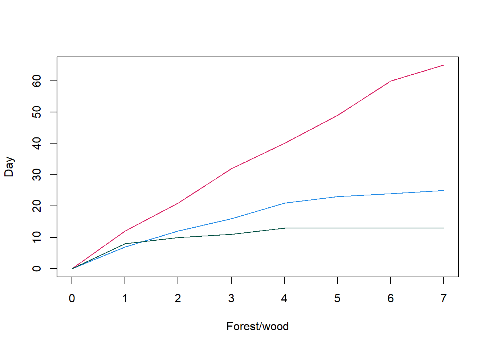

Chapter 11 Rarefaction
We are going to create a rarefied abundance table in this chapter. This can be a controversial topic so please make your own decision if you want to do this or not in your own analysis.
11.1 Rarefaction: setup
We will use a new notebook called "4-rarefaction.ipynb". Add the following to this new notebook to load the required libraries/packages and data.
#Libraries
library("phyloseq")
library("microbiome")
library("vegan")
library("IRdisplay")
#Load phyloseq object
load("phyloseq.RData")
#Load ASV count vector
load("num_asvs_vec.v2.RData")Ensure you add markdown and code cells to this notebook to give yourself a good structure.
11.2 Rarefaction curve
Prior to rarefying our data we need to determine the depth we want to use. We can carry this out with a rarefaction curve.
A rarefaction curve is produced by randomly sampling the sequences in a
sample (without replacement). The rarefaction curve extracts and plots
the first N sequences of each sample. N is equal to the step size which
we will set as 50 (step = 50).
From these sequences it will plot the number of total ASVs it has found against the depth it has currently sampled. Therefore, after 10 steps it will be at a depth of 500 on the x-axis (50 * 10) and it will show how many unique ASVs it has currently discovered from all 10 samplings.
11.2.1 Analogy
You are cataloguing the bird diversity (ASV diversity) in three forests/woods in Hampshire (3 samples of our abundance table). You record your findings over a week for each forest. Your record on the cumulative amount of unique species you find over the 3 separate weeks are in the table below:
| Day | New Forest (93900 acres) | Telegraph woods (50 acres) | Old Lords wood (4.67 acres) |
|---|---|---|---|
| 1 | 12 | 7 | 8 |
| 2 | 21 | 12 | 10 |
| 3 | 32 | 16 | 11 |
| 4 | 40 | 21 | 13 |
| 5 | 49 | 23 | 13 |
| 6 | 60 | 24 | 13 |
| 7 | 65 | 25 | 13 |

In this case we can be fairly confident that seven days is enough to find all the birds we can in the Old Lords wood. I.e. the sampling depth is enough. Just like bird watching, it is very hard to find all the species present in a sample with metabarcoding or shotgun metagenomics. This can be caused by our barcodes not picking up all species, our sampling wasn't perfect, some species are very rare, or errors that DNA sequencing introduces.
A week seems like a good amount for sampling the Telegraph woods but it is possible that some more species have not been recorded.
Strikingly, a week does not appear to be enough time for the New Forest. The amount of new species decreased to 5 on day 7 but the curve has not plateau'd.
This hopefully helps you understand why rarefaction curves are a useful measure of how well we have captured the diversity of samples at differnet depths.
11.3 Rarefaction curve: simple plot
We'll use vegan to create our rarefaction curve like we did in
Chapter 9.
#Extract ASV table as data frame
asv_abund_df <- as.data.frame(t(phyloseq::otu_table(pseq)))
#Rarefaction curve
vegan::rarecurve(
x = asv_abund_df, step = 50,
xlab = "Read depth",
ylab = "ASVs"
)11.4 Rarefaction curve: better plot
It is a useful plot but we can make it bigger and better! We will do that with the following additions:
- Saving it as a
.pngfile with the functionspng()anddev.off(). - Adding extra options to
vegan::rarecurve():lwd: Sets the line width of the plot.label: Turn the sample labels on (T) or off (F).sample: Draws a vertical line at the specified depth. Additionally, draws a horizontal line for each sample showing how many ASVs were discovered at the sampling depth.
- Adding a vertical line showing the minimum depth of the samples with
abline().
#Improved plot saved as file
png(filename = "./rarefaction_plot.png", res = 300,
units = "mm", height = 200, width = 300)
#Plot
vegan::rarecurve(
x = asv_abund_df, step = 50,
xlab = "Read depth", ylab = "ASVs", lwd=1, label = F,
sample = min(microbiome::readcount(pseq))
)
dev.off()11.5 Rarefaction curve: display plot
We have created and saved the plot as a .png but it is not being
displayed. We can use the package
IRdisplay to display plots
from files in jupyter-notebook. In this case the function
display_png() is used.
#Display the plot in jupyter notebook
IRdisplay::display_png(file="./rarefaction_plot.png")11.6 Rarefaction slope
#Rarefy abundance table #### #i.e. convert abundance numbers so each sample has equal depth
#Before rarefying a table it is good to make a rarefaction curve #This is to help us choose an appropriate rarefaction threshold
#We will use the very useful package vegan #Ignore any warning message vegan::rarecurve( x = as.data.frame(t(phyloseq::otu_table(pseq))), step = 50)
#Let us improve this and save it into a file png(filename = "./rarefaction_plot.png", res = 300, units = "mm", height = 200, width = 300) vegan::rarecurve( x = as.data.frame(t(phyloseq::otu_table(pseq))), step = 50, ylab="ASVs", lwd=1,label=F) #Add a vertical line of the smallest sample depth abline(v = min(reads_sample), col="red") dev.off()
#With this we can see that the majorty of samples plateau at #the minimum sampleing depth #Therefore we can use this as a rarefaction size pseq_rarefy <- phyloseq::rarefy_even_depth( pseq, sample.size = min(reads_sample), rngseed = 1000)
#Summarise and check sample counts which should each amount to 10433 microbiome::summarize_phyloseq(pseq_rarefy) microbiome::readcount(pseq_rarefy)
#Check ASVs num_asvs_vec["rarefied"] <- nrow(phyloseq::otu_table(pseq_rarefy)) num_asvs_vec
#Save phyloseq object save(pseq_relpseq_rarefyabund, file = "phyloseq_rarefied.RData")